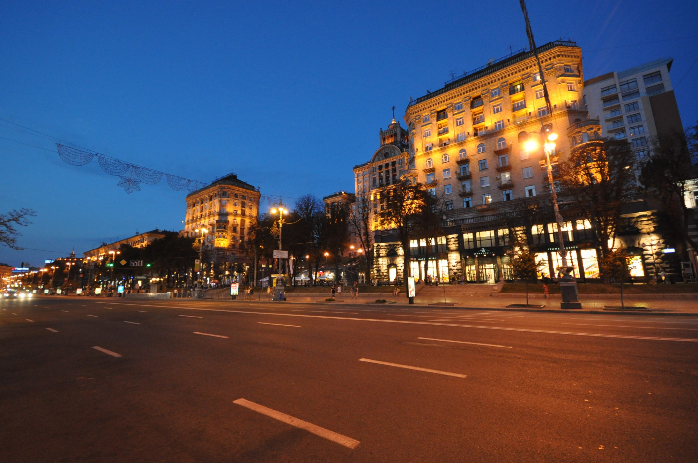
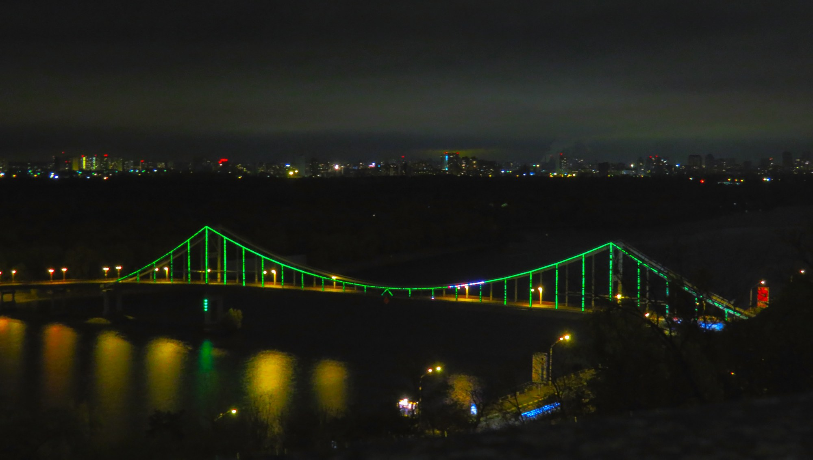
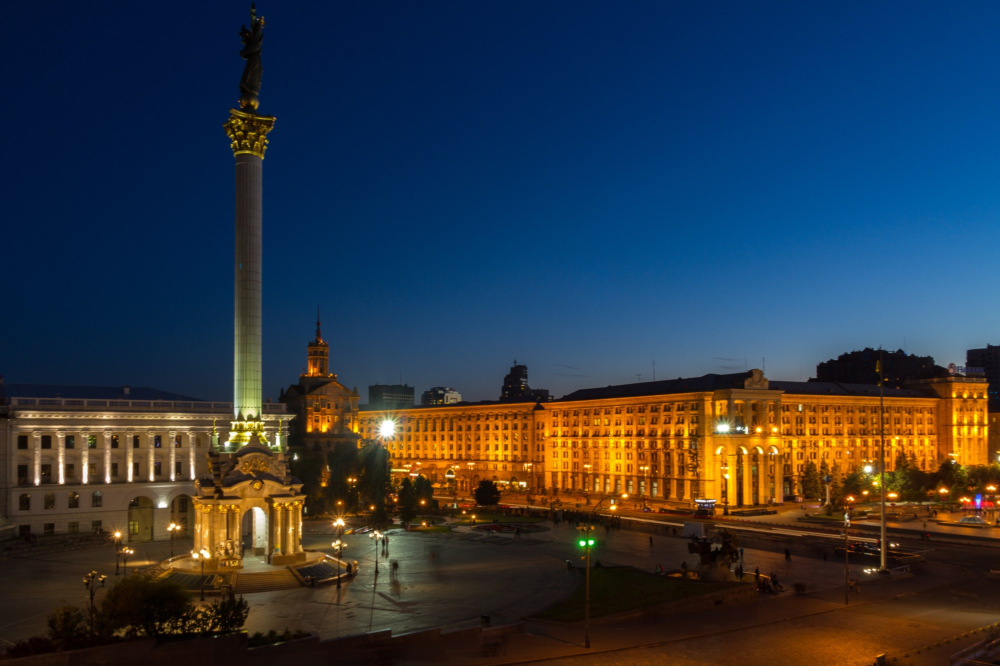

Київ для прогулянок / Вечір
Вечірній Київ
Київ увечері має особливу атмосферу. Центр міста освітлюється, а знайомі місця виглядають зовсім інакше.
Коли місто вмикає світло
Три місця для вечірньої прогулянки
Хрещатик
Центральна вулиця Києва, яка особливо красиво виглядає після заходу сонця.
Почни з центру. Пройдися вулицею, поглянь на освітлені фасади й відчуй, як змінюється звичний міський ритм.

Володимирська гірка
Гарне місце для спокійної прогулянки та панорами на Дніпро.
Пауза над містом. Зупинись біля оглядового майданчика: звідси можна побачити річку, мости й далекий берег.

Майдан Незалежності
Одне з найвідоміших місць столиці, яке ввечері стає особливо атмосферним.
Останній кадр. Збережи на пам’ять панораму площі та вечірні вогні у самому серці Києва.
- Найкращий час:
- Після заходу сонця
- Ідеально:
- Для фотографій
- Формат:
- спокійна вечірня прогулянка
Фотографії показують Київ у різні роки; освітлення та вигляд локацій можуть змінюватися.